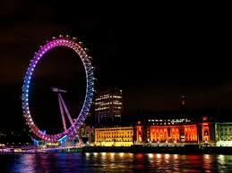

런던아이
런던아이는 영국 런던 템즈 강변 남안의 위치한 대형 대관람차이다.
현재 유럽에서 가장 큰 대관람차이며 해마다 300만명이 넘는 관광객이 방문해 영국의 대표적인 관광지로 꼽히는 동시에 다수의 대중문화 작품에서 등장하는 건물로 이름나 있다.
그 예시로 'if only'에서 바이올린을 전공하는 사랑스런 로맨티스트 '사만다'와 자신의 일에만 몰두하는 성공한 젊은 비즈니스 맨 '이안'의 배경화면으로 유명하다.
대관람차인 런던아이의 전체 원형 틀에는 32개의 관람용 캡슐이 설치되어 있고 바퀴가 회전하면서 다양한 방향에서 런던 시내를 관람하게 되는데 런던에 오면 런던아이는 필수 여행코스로 1개의 캡슐에는 총 25명이 탑승 가능하고 한바퀴 회전하는 데 약 30분이 소요된다.
2015년 1월 코카콜라가 런던아이의 스폰서가 되었다.